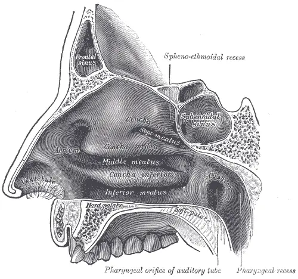

DX.4 — Corps étranger nasal
Un enfant de deux à quatre ans introduit un petit objet dans sa narine ; le plus souvent, rien ne se voit et rien ne fait malS1S2. Une rhinorrhée unilatérale fétide doit faire regarder dans le nez avant de prescrire quoi que ce soitS1S4. Une pile bouton ou un aimant transforment cet incident banal en urgence, car la nécrose de la cloison commence en quelques heuresS2S4S12.
1. Définition
Le corps étranger nasal désigne un objet ou une matière introduits dans une fosse nasale et qui y restent retenusS2S5. Les hôpitaux de Marseille (AP-HM) distinguent trois situations : l'objet récent et connu, l'objet méconnu mais symptomatique, et la découverte fortuiteS5. Un objet resté longtemps dans la fosse nasale peut devenir le noyau d'un rhinolitheS1.
Rhinolithe : le corps étranger oublié
Le rhinolithe se forme autour d'un corps étranger resté longtemps dans la fosse nasale, qui lui sert de noyauS1. Il se présente donc comme une rétention ancienne : obstruction et écoulement d'un seul côté, souvent sans récit d'introductionS1S5. Une pile bouton restée treize ans dans la fosse nasale d'une adolescente a provoqué une obstruction unilatérale, un écoulement purulent et une hyposmieS20. Cet exemple rappelle que l'âge adulte n'exclut pas le diagnostic lorsque les signes restent unilatéraux et chroniquesS20.
2. Épidémiologie (Suisse, puis Europe)
L'article suisse de référence, rédigé à l'Hôpital universitaire de Bâle, indique que le pic d'âge se place entre deux et quatre ansS1. Cet enfant est donc plus jeune que celui qui introduit un objet dans son oreille, chez qui le pic se situe de la quatrième à la septième année de vieS1. À Toulouse, 388 enfants ont consulté en cinq ans pour un corps étranger nasal, soit 68 cas par an en moyenneS2. Les données européennes montrent une affection fréquente, surtout domestique, et rarement compliquéeS2S9S10.
Qui est touché : Suisse, puis Europe
| Donnée | Valeur | Source |
|---|---|---|
| Bâle, revue suisse (2012) | Le pic d'âge se situe entre 2 et 4 ans. | S1 |
| Toulouse, urgences pédiatriques, 2003–2008 | On compte 388 patients et 393 objets ; 71 % ont moins de 4 ans ; l'âge moyen atteint 3,5 ans. | S2 |
| Toulouse, même série | Le sex-ratio vaut 0,95 et 95 % des accidents surviennent au domicile. | S2 |
| Padoue, urgences pédiatriques, 2007–2018 | Les corps étrangers (oreille, nez, gorge, tube digestif, œil) représentent 1,5 % des 217 900 passages. | S9 |
| Padoue, même série | L'incidence passe de 10,45 à 12,66 pour 1000 enfants par an entre 2007 et 2018. | S9 |
| Rome, ORL pédiatrique, 2007–2018 | Sur 1443 enfants, 458 (31,7 %) ont un objet nasal, contre 613 (42,5 %) dans l'oreille. | S10 |
| Angleterre, statistiques hospitalières, 2000–2022 | Les extractions nasales diminuent de 52,82 actes par an après 2012. | S16 |
Le profil saisonnier de Toulouse montre des pics en janvier, mars, avril et octobre, après Noël, Pâques et Halloween, qui regroupent 40 % des admissionsS2. Cinq enfants de cette série ont récidivé, en moyenne six mois plus tard, ce qui justifie un conseil de prévention à la sortieS2. Le côté droit était touché dans 60 % des cas, une différence qui s'effaçait avant 4 ansS2. Le séjour aux urgences durait en moyenne 78 minutesS2. La revue londonienne de 2000 compte aussi les personnes avec déficience intellectuelle parmi les porteurs fréquentsS19.
L'histoire naturelle dépend surtout de la nature de l'objet : un objet inerte reste longtemps silencieux, alors qu'une pile bouton lèse la muqueuse en quelques heuresS1S12. Dans la série toulousaine, aucune complication n'est survenue et un seul enfant a eu besoin d'une anesthésie généraleS2. À Rome, 87 % des enfants porteurs d'un corps étranger ORL ont été extraits aux urgences puis renvoyés à domicileS10.
Les formes graves restent l'exception : à Padoue, 5,5 % des enfants vus pour un corps étranger ont été hospitalisés, toutes localisations confonduesS9. À Rome, 40 enfants (2,7 %) ont eu besoin d'une hospitalisation et d'une chirurgie, et un enfant est décédé aux urgencesS10. Le communiqué suisse de 2021 signale qu'une étude italienne a montré une forte hausse des accidents de piles pendant le confinementS8.
3. Physiopathologie
Le diagnostic et l'extraction exigent de connaître la fosse nasale, car l'objet se loge dans des recoins précis et peut basculer vers le rhinopharynxS1S5. Trois cornets divisent chaque fosse en trois méats ; l'objet siège le plus souvent dans le méat inférieur, sous le cornet inférieur, ou devant le cornet moyenS1.
Base à connaître : la fosse nasale
Chaque fosse nasale s'ouvre en avant par le vestibule et se termine en arrière par la choane, qui débouche dans le rhinopharynxS1S5. La cloison forme sa paroi interne ; la paroi externe porte trois cornets superposés, qui délimitent trois méatsS1. Un objet récent se voit parfois en relevant simplement la pointe du nez ; plus profond, il se place entre la cloison en dedans et le cornet inférieur ou moyen en dehorsS5.
La cloison sépare deux fosses indépendantes : l'objet n'obstrue donc qu'un côté, et les sécrétions bloquées derrière lui ne s'écoulent que par cette narineS1S5. Ces sécrétions stagnantes s'infectent, ce qui explique l'écoulement muco-purulent fétide, parfois sanglant, d'un seul côtéS4S5.
Paroi latérale de la fosse nasale droite. La planche anatomique montre la paroi latérale en coupe sagittale, vue du côté de la cloison.

Lisez d'abord seul ce cliché (paroi latérale de la fosse nasale droite) : cherchez vous-même le signe.
La copie annotée (paroi latérale de la fosse nasale droite) montre les repères numérotés décrits ci-dessous.
- 1. Le vestibule forme l’entrée cutanée que l’on inspecte en relevant la pointe du nezS5.
- 2. Le méat inférieur, sous le cornet inférieur, loge le plus souvent le corps étrangerS1.
- 3. Le cornet moyen limite en haut la zone où siège la seconde localisation habituelleS1.
- 4. La choane relie la fosse au rhinopharynx : un objet poussé en arrière peut y basculerS1.
- Un objet invisible en rhinoscopie antérieure peut siéger plus en arrière, entre la cloison et les cornets ; la nasofibroscopie le localise alors.
- Un objet enfoncé vers l’arrière franchit la choane et menace les voies aériennes.
Ce que l'image décide. On extrait d’avant en arrière sous contrôle de la vue, l’enfant assis, sans repousser l’objet vers la choane.

L'objet inerte agit d'abord par sa présence : il irrite la muqueuse, qui s'enflamme et sécrète, puis les sécrétions retenues s'infectent et deviennent fétidesS4S5. Cette chaîne explique la rhinorrhée purulente unilatérale, parfois mêlée de sang, qui révèle l'objet méconnuS4S5. Les complications dépendent de la durée de séjour, de la forme, de la matière et de la taille de l'objetS1.
Trois mécanismes de lésion
| Perturbation | Exploration qui la montre | Correction |
|---|---|---|
| L'objet inerte irrite la muqueuse, qui sécrète et saigne. | La rhinoscopie montre l'objet entouré de sécrétions. | L'extraction sous contrôle de la vue supprime la cause. |
| La pile bouton provoque une nécrose chimique au contact de la muqueuse humide. | L'endoscopie montre escarre, nécrose ou perforation. | L'extraction immédiate puis le suivi endoscopique limitent les séquelles. |
| Deux aimants pincent la cloison et provoquent une nécrose de pression. | L'endoscopie montre ulcération ou perforation septale. | L'extraction en urgence décomprime la cloison. |
| L'objet repoussé franchit la choane et peut être inhalé. | La clinique respiratoire et la radiographie le recherchent. | La filière des voies aériennes prend le relais. |
Les piles bouton et les aimants restent rares, mais ils provoquent des nécroses chimiques et des nécroses de pression, avec ulcérations, perforation septale et sténoses jusqu'aux choanesS1. En milieu humide, la pile nécrose rapidement les parois, ce qui expose aux synéchies et à la perforation de la cloisonS4. Dans un modèle de cloison ovine, la brûlure alcaline progresse vite et atteint une profondeur moyenne de 2160 µm après 30 minutesS17.
Un autre modèle ovin montre une nécrose mucopérichondrale de pleine épaisseur dès la troisième heure, alors que le cartilage reste indemne pendant les douze premières heuresS18. Dans ce modèle, l'irrigation par acide acétique à 0,25 % n'a pas fait mieux que le sérum physiologique pour limiter la profondeur des lésionsS18. Aucune solution neutralisante ne remplace donc l'extraction, qui reste le seul geste efficaceS4S18. Une équipe chinoise a réduit in vitro la profondeur des lésions à 685 µm avec du miel, mais aucune recommandation européenne n'applique ce geste au nezS6S17.
La pile bouton montre la chaîne complète : contact humide, nécrose de la muqueuse, atteinte du périchondre, puis perforation septale, parfois tardiveS4S11S18. Une série israélienne de 45 enfants a observé une perforation précoce dans 4,4 % des cas, puis tardive dans 18 % des cas suivisS11. L'inhalation reste rare ; elle survient surtout lorsque l'extraction repousse l'objet en arrière, ce qui commande la position assise et le geste d'avant en arrièreS1S5.
4. Démarche diagnostique
La démarche recherche d'abord le danger, avant même de regarder l'objet : pile bouton, aimant, détresse respiratoire ou suspicion d'ingestionS1S2S6. Viennent ensuite les causes fréquentes d'une rhinorrhée unilatérale, que la rhinoscopie et la nasofibroscopie départagentS4S5. Le tableau discriminant donne pour chaque hypothèse l'élément qui tranche et la conduite.
Diagnostics à départager
| Hypothèse | Ce qui tranche | Piège | Conduite si positif |
|---|---|---|---|
| 🚩 Pile bouton ou aimant dans le nez | L'anamnèse d'un objet manquant et l'aspect en double contour sur la radiographie l'identifient. | L'enfant reste souvent sans symptôme au début. | L'extraction se fait sans délai par une équipe équipée. |
| 🚩 Pile passée dans les voies aériennes ou digestives | La radiographie thoracique retrouve la pile introuvable dans le nez. | Un nez vide après une pile disparue ne rassure pas. | On applique la filière d'ingestion de pile, avec endoscopie en moins de 2 heures. |
| Corps étranger inerte méconnu | La rhinoscopie ou la nasofibroscopie le visualisent. | Une rhinorrhée unilatérale traitée comme une sinusite retarde le diagnostic. | L'extraction est programmée sous contrôle de la vue. |
| Lésion tumorale ou masse unilatérale | L'endoscopie montre une masse et non un objet libre. | L'âge et les saignements récidivants orientent ailleurs. | Le patient rejoint les fichiers sur l'angiofibrome et le cancer naso-sinusien. |
La pile introuvable relève de la recommandation française de 2022 : toute suspicion d'ingestion se traite comme une ingestion jusqu'à la radiographie thoraciqueS6. La revue suisse de 2012 et la série toulousaine placent la pile et l'aimant en tête des objets dangereuxS1S2. Une masse unilatérale qui saigne chez l'adolescent relève du fichier sur l'angiofibrome nasopharyngien juvénile ; chez l'adulte, du cancer des fosses nasales.
Le raisonnement du débutant échoue souvent au même endroit : il prescrit un antibiotique pour une rhinorrhée purulente unilatérale sans examiner la narineS4S5. Le raisonnement pas à pas évite cette erreur, exemple chiffré à l'appui. La bonne séquence suit quatre temps : le signe unilatéral évoque l'objet, la rhinoscopie le cherche, la nasofibroscopie le localise et la nature de l'objet fixe le délaiS1S4S5. Une perforation découverte plus tard relève du fichier sur la perforation de la cloison.
Raisonnement pas à pas : la rhinorrhée qui ne guérit pas
Situation. Une enfant de 3 ans présente depuis trois semaines un écoulement purulent de la seule narine droite, avec une odeur que la mère trouve désagréableS1S4. Elle n'a pas de fièvre, elle mange normalement, et un antibiotique de sept jours n'a rien changéS4S5.
Mécanisme. Un écoulement purulent limité à un côté traduit une stase derrière un obstacle, et non une infection diffuse des deux fossesS4S5. L'âge de 3 ans correspond au pic de fréquence des corps étrangers nasauxS1S2.
Signe. L'odeur fétide et l'unilatéralité sont toujours suspectes d'un corps étranger, selon la revue bâloiseS1. L'absence de récit d'introduction ne change rien, car l'objet ancien reste souvent méconnu de l'entourageS5.
Examen. Le médecin aspire les sécrétions et recherche l'objet dans la fosse droite sous lumière ; si rien n'apparaît, l'ORL passe un nasofibroscope soupleS1S5. Dans ce cas, une perle en plastique se cache dans le méat inférieur, l'objet le plus fréquent de la série toulousaineS1S2.
Décision. L'objet inerte, ancien et entouré de muqueuse inflammatoire relève de l'ORL, car la vue est mauvaise et la coopération incertaineS1S5. Après l'extraction, le médecin contrôle la fosse et examine l'autre narineS2S5.
Erreur classique. Le débutant renouvelle l'antibiotique, puis demande une radiographie des sinus, qui reste normale puisque la perle est radio-transparenteS5. Il évite ce détour en regardant d'abord dans la narine sous une bonne lumièreS4S5.
5. Anamnèse ciblée et drapeaux rouges
L'anamnèse cherche d'abord la nature de l'objet, car elle fixe le délai d'extraction ; la question « manque-t-il une pile ou un aimant à la maison ? » vient en premierS1S2. Souvent, un adulte a vu l'introduction ou l'enfant la raconte lui-mêmeS1S4. Chez le tout-petit, l'introduction reste souvent inaperçue, et le tableau des symptômes devient alors le seul indiceS1S5.
Chaque symptôme, caractérisé
| Symptôme | Caractères | Typique ? | Pourquoi |
|---|---|---|---|
| Aucun symptôme | L'objet récent et connu ne gêne pas encore. | Oui, c'est le cas le plus fréquent. | La muqueuse reste saine pendant les premières heures. |
| Rhinorrhée unilatérale | Elle siège d'un seul côté, devient muco-purulente et fétide, parfois sanglante. | Oui, elle signe le corps étranger méconnu. | Les sécrétions stagnent derrière l'objet et s'infectent. |
| Odeur fétide | L'entourage la perçoit, sans fièvre ni atteinte générale. | Oui, elle est toujours suspecte. | Les sécrétions retenues derrière l'objet s'infectent. |
| Épistaxis | Elle reste unilatérale, faible et répétée. | Possible, mais non spécifique. | La muqueuse inflammatoire ou lésée saigne au contact de l'objet. |
| Obstruction nasale | Elle touche un seul côté et persiste. | Oui, si elle est unilatérale. | L'objet et l'œdème ferment le méat. |
| Éternuements, douleur faciale | Ils accompagnent l'inflammation locale. | Peu typiques. | La muqueuse irritée déclenche le réflexe. |
| Toux, stridor, hypersalivation | Ils apparaissent après une manœuvre ou une disparition de l'objet. | Non : ils signent une migration. | L'objet a franchi la choane vers les voies aériennes ou digestives. |
Dans la série toulousaine, 88 % des enfants n'avaient aucun symptôme ; les autres présentaient surtout un saignement, une gêne ou une odeur fétideS2. La revue suisse indique, d'après une série de référence, 43 % d'enfants sans symptôme, 12 % de saignements et 12 % de sécrétions unilatéralesS1. Elle cite aussi 10 % d'odeur désagréable, 7 % de rhinorrhée non sanglante, 6 % d'éternuements et 4 % de douleursS1.
Une rhinorrhée bilatérale n'exclut pas le diagnostic, car l'objet peut être bilatéral : cinq enfants toulousains portaient un objet dans chaque narineS2S4. La durée de séjour était inconnue dans un quart des cas et inférieure à quatre heures dans 65 % des casS2.
Les questions ciblées portent sur la matière, l'heure, le côté, le nombre d'objets et les tentatives déjà faites, chacune pour une raison préciseS1S2S5. Les drapeaux rouges imposent chacun une action immédiate.
Questions ciblées et leur raison
- « Quel objet, et manque-t-il une pile ou un aimant ? » : la pile et l'aimant imposent une extraction immédiateS1S2.
- « À quelle heure ? » : la nécrose due à la pile augmente avec la durée de contactS12S17.
- « Combien d'objets, et de quel côté ? » : l'objet peut être bilatéral ou multipleS2.
- « Qui a déjà essayé de l'enlever, et comment ? » : chaque tentative supplémentaire augmente les complications et réduit la coopérationS1.
- « L'enfant a-t-il toussé, avalé ou salivé depuis ? » : ces signes font craindre une migration vers les voies aériennes ou digestivesS6S7.
- « Depuis quand le nez coule-t-il d'un seul côté ? » : une rétention ancienne explique l'écoulement fétideS4S5.
- « L'enfant a-t-il déjà introduit un objet ? » : la récidive survient chez certains enfants dans les mois suivantsS2.
Drapeaux rouges
| Drapeau rouge | Signification | Action immédiate |
|---|---|---|
| 🚩 Pile bouton, connue ou suspectée | La nécrose chimique commence en quelques heures. | On organise l'extraction sans délai par une équipe équipée. |
| 🚩 Aimants, surtout plusieurs | Ils compriment la cloison de part et d'autre. | On extrait en urgence et l'on contrôle la cloison. |
| 🚩 Pile disparue du nez | Elle a pu être avalée ou inhalée. | On fait une radiographie thoracique sans délai. |
| 🚩 Toux, stridor, détresse respiratoire | L'objet a pu migrer dans les voies aériennes. | On appelle le 144 et l'on oriente vers la filière des voies aériennes. |
| 🚩 Hypersalivation, refus de boire | L'objet a pu s'enclaver dans l'œsophage. | On laisse l'enfant à jeun et l'on suit la filière d'ingestion. |
| Échec d'une ou deux tentatives | La coopération s'effondre et le risque de lésion augmente. | On adresse l'enfant à l'ORL. |
La recommandation française demande de laisser l'enfant à jeun et de ne pas le faire vomir lorsqu'une ingestion de pile est possibleS6. Le centre Tox Info Suisse est joignable au numéro 145 pour toute question d'exposition toxiqueS13.
L'anamnèse ne prouve rien à elle seule : l'absence de récit n'exclut pas l'objet, et un récit précis ne garantit pas qu'il reste en placeS1S5. Elle sert donc à graduer l'urgence, tandis que l'examen confirme ou infirme la présence de l'objetS4S5.
6. Examen physique ciblé, région par région
L'examen se fait sur un enfant tenu assis, car la position droite diminue le risque d'inhalation pendant le gesteS1. Il suit l'ordre réel de la consultation : état respiratoire, vestibule, rhinoscopie antérieure, pharynx et cou, puis autre narine et oreillesS1S2S5.
Région 1 — État respiratoire et général
Signe. Le médecin cherche un stridor, un tirage, une toux ou une hypersalivation, qui signeraient une migration de l'objetS6S7.
Geste. Il observe la respiration, compte la fréquence respiratoire et mesure la saturation, comme le prévoit le protocole bernois d'ingestionS7.
Aspect. Normalement, l'enfant respire calmement par la bouche et l'autre narine ; tout signe respiratoire nouveau change la filièreS6S7.
Région 2 — Vestibule et partie antérieure
Signe. L'objet récent apparaît parfois dès l'entrée de la fosse nasaleS5.
Geste. Le médecin soulève simplement la pointe du nez, sous un bon éclairage, avant tout instrumentS4S5.
Aspect. Une muqueuse rose et humide est normale ; une perle, une bille ou un morceau de papier se voient sous la lumièreS2S5.
Piège. Un objet poussé par une tentative maladroite quitte le vestibule et devient invisible sans instrumentS1S5.
Région 3 — Rhinoscopie antérieure
Signe. L'objet profond se cache entre la cloison et le cornet inférieur ou moyen, parfois noyé dans les sécrétionsS5.
Geste. L'ORL utilise une lampe frontale et un spéculum nasal ; il aspire les sécrétions avant de conclureS1.
Aspect. La muqueuse inflammatoire et les sécrétions purulentes gênent l'examen du corps étranger ancienS5. Une pile laisse autour d'elle une escarre, un œdème ou une nécrose de la muqueuseS11.
Piège. Une rhinoscopie antérieure normale ne suffit pas si l'écoulement unilatéral persiste ; la nasofibroscopie devient alors nécessaireS5.
Région 4 — Pharynx et cou
Signe. Le médecin cherche une salive accumulée, une douleur à la déglutition ou une lésion buccale, qui évoqueraient une ingestionS7.
Geste. Il inspecte la cavité buccale à la recherche d'une lésion et note toute douleur à la déglutitionS7.
Aspect. Une salivation abondante ou un refus de boire évoquent un objet œsophagien, qui impose le jeûne et la filière d'ingestionS6S7.
Région 5 — Autre narine et oreilles
Signe. Un second objet peut se trouver dans l'autre narine ou dans un conduit auditifS1S2.
Geste. La revue bâloise conseille d'examiner l'autre oreille et le nez après un objet auriculaire ; le même réflexe vaut pour la seconde narineS1S2.
Aspect. Dans la série toulousaine, cinq enfants avaient un objet dans chaque narineS2.
La valeur de l'examen dépend de la coopération : un enfant agité, une épistaxis ou un objet postérieur rendent la vue mauvaise et justifient l'orientation vers l'ORLS1. L'immobilisation suit la technique bâloise : l'enfant assis sur les genoux d'un adulte, qui tient ses bras et ses jambes, la tête maintenue par une seconde personneS1.
7. Approche syndromique
Quatre tableaux se présentent, et chacun appelle une conduite différente ; le tableau des syndromes les éclate en signes fonctionnels et physiquesS1S4S5.
7.1 Objet récent connu : l'enfant arrive sans symptôme, souvent dans les heures qui suivent, et l'objet se voit sous la lumièreS2S5.
7.2 Rétention méconnue : l'objet oublié se révèle par une rhinorrhée unilatérale fétide, une obstruction et parfois une épistaxisS4S5.
7.3 Lésion caustique : une pile provoque écoulement, saignement, douleur et escarre, dont la fréquence croît avec la durée de contactS11S12.
7.4 Migration postérieure : l'objet qui disparaît du nez peut provoquer toux, stridor, hypersalivation ou refus alimentaireS6S7.
Syndromes et signes
| Syndrome | Signes fonctionnels | Signes physiques |
|---|---|---|
| 7.1 Objet récent connu | Aucun, ou une gêne discrète. | L'objet se voit à l'entrée, sur une muqueuse saine. |
| 7.2 Rétention méconnue | L'enfant a le nez bouché d'un côté et une odeur fétide. | Le pus unilatéral et la muqueuse inflammatoire cachent l'objet. |
| 7.3 Lésion caustique | L'écoulement, le saignement et la douleur apparaissent. | L'escarre, la nécrose ou la perforation septale se voient en endoscopie. |
| 7.4 Migration postérieure | La toux, la dysphagie ou la salivation surviennent. | Le stridor ou une asymétrie auscultatoire peuvent exister. |
Dans la série israélienne de piles nasales, l'écoulement nasal touchait 35,6 % des enfants et l'épistaxis 27 %S11. L'endoscopie initiale y montrait une escarre dans 44,4 % des cas, un œdème dans 42,2 % et une nécrose muqueuse dans 31 %S11.
Rhinorrhée unilatérale : définition et geste
La rhinorrhée désigne un écoulement par la narine ; elle devient évocatrice quand elle reste d'un seul côté, purulente et parfois fétideS4S5. Le médecin recherche son origine en soulevant la pointe du nez sous la lumière, puis par nasofibroscopie si rien n'apparaîtS5. Son mécanisme tient à la stagnation des sécrétions derrière l'objet, qui s'infectent et sentent mauvaisS5.
8. Diagnostic positif et critères
Aucune société savante ne publie de critères formels : le diagnostic repose sur la visualisation de l'objet, en rhinoscopie ou en nasofibroscopieS4S5. Avant toute extraction, le médecin doit préciser le siège, la forme et la nature de l'objet, car ces trois données choisissent l'instrument et le délaiS5. Les éléments qui suffisent et ceux qui ne suffisent pas se résument en un tableau.
Ce qui suffit, ce qui ne suffit pas
| Élément | Valeur | Conséquence |
|---|---|---|
| L'objet est vu en rhinoscopie ou en endoscopie. | Il suffit au diagnostic. | On précise siège, forme et nature avant le geste. |
| L'aspect en double contour apparaît sur la radiographie. | Il identifie une pile. | L'extraction devient immédiate. |
| La rhinorrhée unilatérale fétide persiste. | Elle ne suffit pas, mais elle impose l'examen. | On fait une nasofibroscopie si la rhinoscopie reste négative. |
| Le récit d'introduction existe. | Il ne suffit pas. | On vérifie que l'objet est toujours en place. |
| La rhinoscopie antérieure est normale. | Elle n'exclut pas un objet postérieur. | On poursuit par l'endoscopie si le doute persiste. |
| La radiographie standard est normale. | Elle n'exclut qu'un objet radio-opaque. | On ne l'utilise pas pour éliminer un objet en plastique. |
La revue bâloise classe comme objets à risque les objets ronds, tranchants ou spécialement dangereux comme les pilesS1. La série toulousaine montre que 80 % des objets sont non organiques : billes en plastique 39 %, pièces de jouets 20 %, cailloux 11 % et papier 6 %S2.
Le classement utile oppose l'objet inerte à l'objet dangereux ; il ne s'agit pas d'un score validé mais d'un tri de délaiS1S2. Un objet inerte et visible s'extrait aux urgences ; un objet dangereux, postérieur ou déjà manipulé deux fois relève de l'ORLS1.
9. Examens complémentaires
9.a L'examen de référence reste la visualisation endoscopique : la nasofibroscopie souple précise le siège quand l'objet échappe à la rhinoscopie antérieureS5.
9.b La rhinoscopie éclairée constitue l'examen de première intention, avec une bonne lumière et une aspirationS1S4.
9.c Chez l'enfant qui ne coopère pas, l'examen et l'extraction se font sous sédation ou anesthésie généraleS1S2.
La radiographie est réservée à un objet radio-opaque, surtout une pile ou un aimant non identifiésS5S6.
9.d En deuxième intention, la radiographie thoracique recherche une pile disparue, et l'endoscopie de contrôle suit la cloison après une pileS6S12.
Rhinoscopie et nasofibroscopie
| Résultat | Signification | Conduite |
|---|---|---|
| L'objet se voit en avant. | Le corps étranger est accessible. | On choisit l'instrument selon sa forme. |
| Le pus unilatéral masque la fosse. | Un objet ancien est probable. | On aspire, puis on passe le nasofibroscope. |
| La muqueuse porte une escarre ou une nécrose. | Une pile a déjà brûlé la muqueuse. | On extrait sans délai et l'on programme le contrôle. |
| La fosse reste vide. | L'objet est sorti ou a migré. | On interroge à nouveau et l'on cherche une migration. |
Piège. La muqueuse inflammatoire et les sécrétions rendent l'examen difficile ; le nasofibroscope souple localise alors l'objet invisible en rhinoscopieS5. Les hôpitaux de Marseille insistent sur la découverte fortuite lors d'un examen systématique ou d'un cliché dentaireS5.
Sédation ou anesthésie générale
La revue bâloise rapporte un recours à la sédation ou à la narcose entre 2 et 39 % pour le nez, contre 8 à 53 % pour l'oreilleS1. À Toulouse, 26 % des enfants ont été adressés à l'ORL après échec, et un seul a nécessité une anesthésie générale pour deux billes profondesS2. Dans la série israélienne de piles nasales, 84,4 % des extractions se sont faites aux urgences sans anesthésieS11.
Indication. L'échec d'une ou deux tentatives, un objet postérieur ou une mauvaise vue justifient ce cadre, car chaque tentative supplémentaire augmente les complicationsS1.
Radiographie : quand elle sert, ce qu'elle montre
Indication. Les radiographies ne sont utiles que pour les corps étrangers radio-opaques, selon les hôpitaux de MarseilleS5. Elles servent donc à identifier un objet métallique inconnu, surtout pour distinguer une pile d'une pièceS6.
Interprétation. Une pile présente un aspect caractéristique en double contour sur la radiographie de face, selon la recommandation française de 2022S6.
Piège. Une radiographie normale n'exclut ni une perle en plastique, ni un morceau de papier, ni un alimentS5. Elle ne doit jamais retarder l'extraction d'une pile déjà vueS4S6.
Radiographie thoracique : la pile disparue
Indication. La recommandation française considère toute suspicion d'ingestion comme une ingestion jusqu'à la radiographie thoracique de face, faite sans délaiS6. Si la pile n'apparaît pas sur ce cliché, elle demande une radiographie de l'abdomen, puis de la tête et du cou si besoinS6.
Interprétation. Une pile enclavée dans l'œsophage impose une endoscopie sans délai, car la gravité de la brûlure augmente au-delà de 2 heuresS6. Le risque d'enclavement est maximal avec une pile d'au moins 15 mm de diamètre chez un enfant de 5 ans ou moinsS6.
Suisse. Le protocole bernois de 2024 prévoit une radioscopie immédiate et une endoscopie en moins de 2 heures, selon la recommandation européenne ESPGHANS7.
Orientation. La recommandation française demande d'adresser sans délai aux urgences tout enfant suspect d'ingestion, quelle que soit la taille de la pileS6. Des signes respiratoires imposent un transfert médicalisé vers un centre capable de traiter une lésion œso-trachéaleS6. Le protocole bernois place la pile en catégorie 2 du triage, ce qui impose d'informer aussitôt le médecin responsableS7.
Endoscopie de contrôle après une pile
Indication. Les enfants symptomatiques et ceux dont la pile est restée longtemps méritent un suivi endoscopique prolongéS12. La série de Petah Tikva montre des anomalies endoscopiques persistantes chez 20,6 % des enfants suivisS12.
Interprétation. La perforation septale peut apparaître après l'extraction : 4,4 % des enfants l'avaient d'emblée, 18 % des enfants revus l'avaient au contrôleS11.
Piège. Dans cette série, 40 % des lettres de sortie omettaient la consigne de suivi, et seuls 40 % des enfants ont été revusS11.
Évolution. Chez les enfants revus, l'écoulement persistait dans 44,4 % des cas, l'obstruction dans 17 % et l'épistaxis dans 12 %S11. Les soins après extraction variaient beaucoup : lavages salés dans 60 % des cas, mupirocine locale dans 51 % et antibiotiques généraux dans 8,8 %S11.
Gravité initiale. La série de Petah Tikva, qui réunit piles et aimants, décrit une perforation septale dans 20,5 % des cas, une érosion dans 56,4 % et une nécrose dans 12,8 %S12. Une rétention prolongée et la présence de symptômes à l'admission s'y associent aux complicationsS12.
Dans la filière d'ingestion, tout saignement digestif ou toute anémie aiguë signent une lésion vasculaire grave et imposent un transfert sans délaiS6.
10. Arbre décisionnel
- Si l'enfant présente une détresse respiratoire ou un stridor, alors on appelle le 144 et l'on suit la filière des voies aériennesS6.
- Si une pile bouton ou un aimant sont en cause, alors l'extraction se fait sans délai par une équipe équipéeS1S2.
- Si la pile reste introuvable dans le nez, alors on fait une radiographie thoracique sans délai, puis abdominaleS6.
- Si la pile est enclavée dans l'œsophage, alors on fait une endoscopie dans les 2 heuresS6S7.
- Si l'objet est inerte, visible et antérieur, alors on tente la pression positive, puis l'instrument adapté à sa formeS1S2S3.
- Si l'objet est postérieur, la vue mauvaise ou après une ou deux tentatives, alors on adresse l'enfant à l'ORLS1.
- Si l'écoulement unilatéral persiste sans objet visible, alors l'ORL pratique une nasofibroscopieS5.
- Si l'objet est retiré, alors on vérifie son intégrité, l'autre narine et la muqueuse, puis on décide du suiviS1S2S11.
11. Prise en charge selon les recommandations suisses
11.A Le but consiste à retirer l'objet entier, en une ou deux tentatives au plus, sans repousser l'objet ni léser la muqueuseS1. Aux urgences pédiatriques, le taux de succès varie entre 65 et 98 % pour le nez, nettement mieux que pour l'oreilleS1.
La difficulté de l'extraction dépend du siège, de la forme, de la taille et de la matière de l'objetS1. Elle dépend aussi de la coopération de l'enfant, de l'expérience du médecin et des instruments disponiblesS1. En Suisse, le pédiatre comme l'ORL retirent la plupart des objets nasaux à l'instrument, sous contrôle de la vueS1.
11.B Une pile ou un aimant déclenchent une conduite chronologique d'urgenceS1S4. Pour l'objet inerte, l'ordre suit trois temps : immobiliser l'enfant assis, préparer la muqueuse, puis choisir la technique d'extraction selon la formeS1S4.
Urgence — conduite chronologique (pile bouton ou aimant)
- À l'appel. L'entourage ne tente aucune manœuvre et amène l'enfant aux urgences sans attendre ; Tox Info Suisse conseille les parents au numéro 145S1S13.
- À l'accueil. L'équipe trie l'enfant en priorité, comme le protocole bernois le prévoit pour toute pile, puis vérifie la respiration et inspecte l'autre narine et la boucheS1S7.
- Extraction, sans délai. L'ORL ou le médecin entraîné extrait la pile sous contrôle de la vue, l'enfant assis ; il prévoit la sédation si la coopération manqueS1S11.
- Avant 2 heures si la pile manque. Une radiographie thoracique recherche la pile, et une pile œsophagienne part en endoscopieS6S7.
- Après l'extraction. Le médecin contrôle la cloison des deux côtés et note escarre, nécrose ou perforationS11S12.
- Jours et semaines suivants. Une endoscopie de contrôle cherche une perforation tardive ou une synéchieS4S11S12.
Le délai maximal reste « le plus tôt possible » : la pile nasale la plus courte de la série de Petah Tikva avait séjourné une demi-heure, la plus longue 1440 heuresS12. Le piège qui fait perdre du temps consiste à attendre une radiographie avant d'extraire une pile déjà visibleS4S6.
Le miel ne concerne que l'ingestion récente de moins de 12 heuresS7. Le protocole bernois en propose alors 5 à 10 mL toutes les 10 minutes dès 12 mois, hors AIPSS7. Il proscrit ce geste chez l'enfant qui respire mal ou qui salive, et il ne retarde jamais l'endoscopieS7.
Techniques d'extraction
| Technique | Objet ciblé | Données |
|---|---|---|
| Pression positive (« baiser du parent ») | Elle convient à l'objet antérieur, chez le jeune enfant. | Elle réussit dans 59,9 % des cas, sans effet indésirable rapporté. |
| Pince | Elle saisit l'objet mou et irrégulier, comme le papier ou le coton. | Elle réussit surtout sur les objets souples. |
| Crochet | Il passe au-dessus et en arrière de l'objet rond, puis le ramène vers l'avant. | Il convient aux perles et aux billes. |
| Sonde à ballonnet | Elle passe derrière l'objet postérieur ; on gonfle le ballonnet puis on tire. | Les données restent limitées. |
| Lavage controlatéral | On injecte environ 7 mL de sérum par la narine libre. | Les données restent limitées. |
| Colle cyanoacrylate | Un bâtonnet encollé reste au contact de l'objet 30 à 60 secondes. | Les données restent limitées. |
La pression positive se pratique ainsi : l'enfant souffle par le nez, narine libre fermée ; chez le petit, un parent souffle brièvement dans sa bouche en fermant la narine libreS1. Une revue britannique de huit études retrouve un succès de 59,9 % (91 sur 152) et aucun effet indésirableS3. La série toulousaine propose de l'essayer en premier, aux urgences ou même au domicile lors de l'appelS2.
La source française de 2019 déconseille au contraire la colle, l'insufflation au ballon et le baiser parental, et préfère l'extraction sous contrôle de la vueS4. Cette conduite suit la source suisse et la revue britannique : la pression positive peut précéder l'instrument, jamais pour une pile ou un aimantS1S2S3.
Dans la série de Baker citée par la revue bâloise, 85 % des objets ont été retirés à la pince ou au crochetS1. L'ORL dispose aussi d'une lampe frontale, d'un spéculum, d'un nasofibroscope souple et d'optiques rigides pour travailler sous contrôle de la vueS1.
La préparation de la muqueuse obéit à une règle suisse précise : l'anesthésie locale par lidocaïne se fait sans vasoconstricteur, car la muqueuse décongestionnée laisse glisser l'objet vers le rhinopharynxS1. Un vasoconstricteur comme la xylométazoline ne s'ajoute avec prudence que si l'objet est enclavé ou si une épistaxis masque la vueS1.
Lidocaïne — Xylocain® Spray (n° 52097)S14
| Indication | L'AIPS prévoit la prévention de la douleur chez l'adulte et l'enfant dès 3 ans, notamment pour les interventions mineures au niveau des narines. |
|---|---|
| Classe | La lidocaïne est un anesthésique local de type amide. |
| Dose AIPS | Une nébulisation de 0,1 mL libère 10 mg ; chez l'enfant dès 3 ans, la dose nasale ne dépasse pas 4 à 5 mg/kgS14. |
| Contre-indications | L'hypersensibilité aux anesthésiques de type amide la contre-indique ; le spray ne convient pas avant 2 ans à cause du menthol. |
| Grossesse | L'AIPS demande la prudence, faute d'étude contrôlée. |
| Allaitement | La lidocaïne passe dans le lait ; l'AIPS déconseille son emploi pendant l'allaitement. |
| Effets indésirables | Un surdosage provoque convulsions, somnolence, arrêt respiratoire, bradycardie et hypotension. |
Selon l'AIPS, la limite de 4 à 5 mg/kg correspond par calcul, chez un enfant de 15 kg, à 60 à 75 mg, soit six à sept nébulisationsS14. Une muqueuse lésée absorbe davantage la lidocaïne, ce qui impose la prudence après une brûlure par pileS14.
Xylométazoline — Otrivin® Rhume Classic (n° 24926)S15
| Indication | L'AIPS cite le rhume, la décongestion de la muqueuse rhinopharyngée et la facilitation de la rhinoscopie. |
|---|---|
| Classe | La xylométazoline est un vasoconstricteur local sympathomimétique. |
| Dose AIPS | De 2 à 11 ans, on donne 1 à 2 gouttes à 0,05 % ou une pulvérisation à 0,05 % par narine, au plus 3 fois par jour. |
| Âge | Entre 1 et 2 ans, elle s'emploie sur prescription ; avant 1 an, elle est exclue ; la solution à 0,1 % attend 12 ans. |
| Contre-indications | L'hypersensibilité, la rhinite sèche ou atrophique, le glaucome à angle fermé et la chirurgie transsphénoïdale l'excluent. |
| Grossesse | L'AIPS exclut son emploi par précaution, à cause de l'effet vasoconstricteur. |
| Allaitement | Elle s'emploie seulement sur prescription médicale. |
| Durée | Au-delà d'une semaine, elle expose à une rhinite médicamenteuse. |
Une goutte à 0,05 % contient 0,0125 mg de chlorhydrate de xylométazolineS15. L'AIPS rapporte un coma chez un nouveau-né de deux semaines après une goutte à 0,1 % dans chaque narine, ce qui rappelle l'interdit avant 1 anS15.
Les situations spéciales concernent surtout le très jeune enfant, la personne qui ne coopère pas et la femme enceinte ou allaitanteS1S19. Le recours à l'ORL suit des critères suisses simples, que l'on applique dès la première consultationS1.
Situations spéciales
- Avant 2 ans, le spray de lidocaïne mentholé est exclu, et la xylométazoline exige une prescription entre 1 et 2 ansS14S15.
- Chez la personne avec déficience intellectuelle, porteuse fréquente selon la revue londonienne, l'anamnèse manque souvent et l'examen doit compenserS19.
- Chez la femme enceinte, l'AIPS exclut la xylométazoline et demande la prudence pour la lidocaïneS15S14.
- Chez la femme qui allaite, l'AIPS déconseille la lidocaïne et réserve la xylométazoline à la prescriptionS14S15.
- Chez l'enfant agité, la sédation ou l'anesthésie générale remplacent une troisième tentativeS1.
Quand adresser à l'ORL
- Le pédiatre doit adresser l'enfant après plus d'une ou deux tentatives infructueusesS1.
- Il l'adresse quand une épistaxis ou des sécrétions rendent la vue mauvaiseS1.
- Il l'adresse quand l'objet siège dans la partie postérieure de la fosse nasaleS1.
- Il l'adresse pour tout objet rond, tranchant ou dangereux, en particulier une pileS1.
La coopération de l'enfant chute souvent dès la première tentative, d'où l'intérêt de confier le geste d'emblée à la personne la mieux équipéeS1.
11.C Après l'extraction, le médecin compare l'objet retiré à celui décrit, examine l'autre narine et regarde la muqueuseS2S5. Après une pile ou un aimant, une endoscopie de contrôle s'impose, car la perforation septale peut apparaître après la sortieS11S12.
11.D Le pronostic de l'objet inerte reste excellent : aucune complication dans la série toulousaine de 388 enfantsS2. Après une pile ou un aimant, la qualité de vie à long terme reste bonne, même si 20,6 % des enfants gardent des anomalies endoscopiquesS12. Les critères de sortie s'énumèrent un par un.
Critères de sortie
- L'objet retiré correspond à celui décrit, et la fosse nasale ne montre plus rienS5.
- La seconde narine et les conduits auditifs ne contiennent aucun autre objetS1S2.
- L'enfant respire librement, sans toux, stridor ni hypersalivationS6S7.
- La muqueuse et la cloison ont été examinées, et leur état figure dans le dossierS11.
- Après une pile ou un aimant, la lettre de sortie fixe la date du contrôle endoscopiqueS11S12.
- Les parents connaissent les signes de recours : écoulement, saignement, douleur ou gêne respiratoireS4S11.
12. Prévention
En prévention primaire, un groupe de pédiatres suisses a demandé en 2021 des compartiments à pile vissés et des piles usagées rangées hors de portéeS8. Il demande d'informer grands-parents, proches et amis du danger, y compris par les réseaux sociauxS8. Il conseille aussi de fermer au ruban adhésif les compartiments trop faciles à ouvrir, notamment sur les jouets, les télécommandes et les balances de cuisineS8. Ce groupe réunissait les présidents de la Société suisse de pédiatrie, de Kinderärzte Schweiz et de la société suisse de gastroentérologie pédiatriqueS8.
En prévention secondaire, toute rhinorrhée unilatérale persistante de l'enfant conduit à regarder dans la narine avant tout traitementS4S5. Les pics toulousains après Noël, Pâques et Halloween désignent les périodes où la vigilance doit augmenterS2. En prévention tertiaire, le suivi endoscopique après une pile dépiste la perforation tardive, et le conseil de sortie vise la récidiveS2S11.
13. Points clés
- Une rhinorrhée unilatérale fétide de l'enfant impose de regarder dans la narine avant de prescrire un antibiotiqueS4S5.
- Une pile bouton ou un aimant dans le nez s'extraient sans délai, car la nécrose de la cloison commence en quelques heuresS1S4.
- Une pile disparue du nez se cherche par une radiographie thoracique sans délai, comme une ingestionS6.
- L'extraction se fait l'enfant assis, d'avant en arrière, en une ou deux tentatives au plusS1.
- L'anesthésie locale de la muqueuse se fait sans vasoconstricteur, qui ferait glisser l'objet vers le rhinopharynxS1.
14. Pièges et questions fréquentes à l'examen fédéral suisse
| Question | Réponse | Raison |
|---|---|---|
| Un enfant de 3 ans a une rhinorrhée purulente unilatérale fétide depuis 3 semaines : quel geste d'abord ? | On examine la narine sous lumière. | L'écoulement unilatéral fétide signe l'objet méconnu (point 5)S4S5. |
| Une pile bouton est visible dans la narine : faut-il d'abord une radiographie ? | Non. | L'extraction ne doit pas attendre, car la nécrose progresse en heures (point 11)S4S6. |
| Une pile introduite dans le nez reste introuvable : que fait-on ? | On fait une radiographie thoracique sans délai. | La pile a pu être avalée et s'enclaver dans l'œsophage (point 9)S6. |
| Peut-on décongestionner la muqueuse avant toute extraction ? | Non, sauf objet enclavé ou épistaxis gênante. | Le vasoconstricteur fait glisser l'objet vers le rhinopharynx (point 11)S1. |
| Quelle dose nasale maximale de Xylocain Spray chez l'enfant de 4 ans ? | Elle atteint 4 à 5 mg/kgS14. | L'AIPS fixe cette limite dès 3 ans (point 11)S14. |
| Après deux tentatives infructueuses, faut-il en faire une troisième ? | Non : on adresse l'enfant à l'ORL. | Les complications augmentent avec le nombre de tentatives (point 11)S1. |
| Quel aspect radiologique identifie une pile ? | L'aspect en double contour. | La recommandation française le décrit comme caractéristique de la pile (point 9)S6. |
| La pression positive par le parent est-elle dangereuse ? | Non, elle reste sûre dans les séries publiées. | La revue britannique rapporte 59,9 % de succès sans effet indésirable (point 11)S3. |
| Dès quel âge l'AIPS autorise-t-elle Xylocain Spray ? | Dès 3 ans ; avant 2 ans, le menthol l'exclut. | L'indication et la contre-indication figurent dans l'AIPS (point 11)S14. |
| Une radiographie normale exclut-elle une perle en plastique ? | Non. | La radiographie ne montre que les objets radio-opaques (point 9)S5. |
| Une pile retirée sans perforation dispense-t-elle de contrôle ? | Non. | La perforation peut apparaître plus tard (point 11)S11S12. |
Sources
Toutes les sources ont été consultées le 11.11.2026 (Europe/Zurich).
- [S1] Gilgen-Anner Y (Hôpital universitaire de Bâle, HNO-Klinik). Fremdkörper in Ohr und Nase : wie sollte man sie entfernen ? Pädiatrie (Rosenfluh) 2012;3, publié le 9 juillet 2012. https://www.rosenfluh.ch/4839
- [S2] Claudet I, Salanne S, Debuisson C, Maréchal C, Rekhroukh H, Grouteau E (urgences pédiatriques, CHU de Toulouse). Corps étranger nasal chez l'enfant. Arch Pediatr 2009;16:1245-51 (résumé). https://doi.org/10.1016/j.arcped.2009.06.005
- [S3] Cook S, Burton M, Glasziou P (Buxted, Royaume-Uni). Efficacy and safety of the « mother's kiss » technique : a systematic review of case reports and case series. CMAJ 2012;184:E904-12 (résumé). https://doi.org/10.1503/cmaj.111864
- [S4] François M. Corps étrangers en ORL. Rev Prat Med Gen 2019;33:852-3, repris dans « Corps étranger dans les fosses nasales : que faire ? », La Revue du Praticien. https://www.larevuedupraticien.fr/exercice/corps-etranger-dans-les-fosses-nasales-que-faire
- [S5] Assistance publique – Hôpitaux de Marseille (AP-HM), ORL pédiatrique. Corps étrangers des fosses nasales (page de service). https://fr.ap-hm.fr/site/orl-pediatrique/rhinosinusologie/pathologies/corps-etrangers-fosses-nasales
- [S6] Haute Autorité de santé (HAS). Diagnostic et prise en charge des enfants ayant ingéré une pile bouton ou une pile plate. Recommandation de bonne pratique validée le 14 février 2022. https://www.has-sante.fr/upload/docs/application/pdf/2022-02/reco_pile_bouton_mel.pdf
- [S7] Inselspital Bern, Notfallzentrum für Kinder und Jugendliche (NZKJ). Richtlinie Fremdkörperingestion, Knopfbatterie, février 2022, révision mai 2024. https://kindernotfallzentrum.insel.ch/fileadmin/Kindernotfallzentrum/Dokumente/Richtlinien/Fremdkoerperingestion_Ablauf_Kindernotfall.pdf
- [S8] Groupe de travail de pédiatres suisses (SSP, Kinderärzte Schweiz, SGPGHE, UKBB). Kinderärzte warnen vor lebensgefährlichen Knopfbatterien. Communiqué, Bâle, 11 juin 2021. https://www.kispi.uzh.ch/sites/default/files/d3-documents/kd00325225.pdf
- [S9] Ocagli H, Azzolina D, Bressan S, et al. Epidemiology and Trends over Time of Foreign Body Injuries in the Pediatric Emergency Department (Padoue). Children 2021;8:938. https://doi.org/10.3390/children8100938
- [S10] Bellocchi G, Acquaviva G, Giammona Indaco F, Eibenstein A. Foreign bodies in the pediatric age : the experience of an Italian tertiary care hospital (Rome). Acta Biomed 2020;91(1-S):60-64. https://doi.org/10.23750/abm.v91i1-s.9260
- [S11] Heilig Y, Tsarfati Y, Gete M, Yafit D, Sapir A (Beer-Sheva, Israël). Long-term outcomes following nasal button battery foreign body injuries in children : a 10-year retrospective analysis of 45 patients. Int J Pediatr Otorhinolaryngol 2026;204:112819 (résumé). https://doi.org/10.1016/j.ijporl.2026.112819
- [S12] Rozenblat T, Zavdy O, Barami S, Hod R, Ulanovski D, Gilony D (Petah Tikva, Israël). Long-Term Quality of Life After Removal of Batteries and Magnets From the Nose in Children. Laryngoscope 2026 (résumé). https://doi.org/10.1002/lary.70899
- [S13] Tox Info Suisse. Page d'accueil, numéro d'urgence 145. https://www.toxinfo.ch
- [S16] Jangan A, Watts E, Pankhania M. Coin-cidence ? Have cashless payments reduced the incidence of upper aerodigestive foreign body insertion ? A study of UK Hospital Episode Statistics. Ann R Coll Surg Engl 2025;107:125-129. https://doi.org/10.1308/rcsann.2024.0050
- [S17] Xueyou L, Zhenhui H, Desheng J, et al. Pediatric nasal button battery injuries : a 10-year retrospective study and in vitro evaluation of prehospital mitigation strategies. Eur J Med Res 2026 (résumé). https://doi.org/10.1186/s40001-026-04110-8
- [S18] Sancaktar ME, Bakırtaş M (Samsun). A potential post-removal pH neutralization strategy to mitigate nasal button battery injuries. Int J Pediatr Otorhinolaryngol 2020;133:110011 (résumé). https://doi.org/10.1016/j.ijporl.2020.110011
- [S19] Kalan A, Tariq M (Royal Hospitals NHS Trust, Londres). Foreign bodies in the nasal cavities : a comprehensive review of the aetiology, diagnostic pointers, and therapeutic measures. Postgrad Med J 2000;76:484-7 (résumé). https://doi.org/10.1136/pmj.76.898.484
- [S20] Jalaladdin M, Alaidarous ST, Althqafi A, Babkour AA. Delayed Diagnosis of a Nasal Foreign Body (Battery) Retained for 13 Years. Ear Nose Throat J 2025 (résumé). https://doi.org/10.1177/01455613251347925
- [S14] Swissmedic, information professionnelle (AIPS) Xylocain® Spray (lidocaïne 10 mg par nébulisation), n° 52097, Aspen Pharma Schweiz GmbH, mise à jour mars 2024. https://files.refdata.ch/simis-public-prod/MedicinalDocuments/46e2c0ad88c840269b1cee01356f80b4-fr.html
- [S15] Swissmedic, AIPS Otrivin® Rhume Classic (chlorhydrate de xylométazoline), n° 24926, Haleon Schweiz AG, mise à jour février 2025. https://files.refdata.ch/simis-public-prod/MedicinalDocuments/7aa9b021e41e40498ad21af61c26b38a-fr.html
Contenu établi à partir des sources citées ; non validé cliniquement par un médecin.